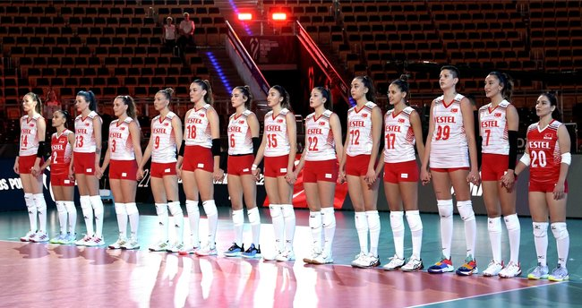

Voleybol Türkiye`de ne zaman başladı?
Türkiye’de voleybola ilgi 1919’larda başladı .Ülkenin ilk beden eğitimi öğretmenlerini yetiştiren Selim Sırrı Tarcan, Türkiye’de voleybol sporunun altyapısını okullarda kurarak başlatan ilk isimdir.
1924-1948 arası bölgesel olarak yürütülen voleybol şampiyonaları, 1948-1970 arası Türkiye Voleybol Şampiyonası olarak organize edildi. Erkeklerde 1970-1971 sezonundan itibaren, kadınlarda ise 1984-1985 sezonundan itibaren Türkiye’de Deplasmanlı Voleybol Ligi’ne geçildi.